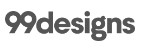
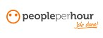

1.
Upwork -Well known platform with a large selection of web development freelancers
2.
Guru -An array of services from accounting to marketing, web development to IT
3.
Toptal -Provides software engineers and designers to companies with freelancer screening
4.
Freelancer.com -A crowdsourcing marketplace to post jobs for freelancers to bid on
5.

99designs -Design-focused platform with contest-like system, best for logo and design work
6.

PeoplePerHour -Connects businesses to skilled freelance experts with easy-to-use features
7.
Craigslist -Sections dedicated to housing, personals, jobs, and freelance gigs
8.
LinkedIn ProFinder -Backed by LinkedIn, hire top local freelancers and see shared connections
9.
Fiverr -Freelance services by both beginner and expert level sellers starting at only $5
10.
Behance -Leading adobe-backed online platform used to show and discover creative work